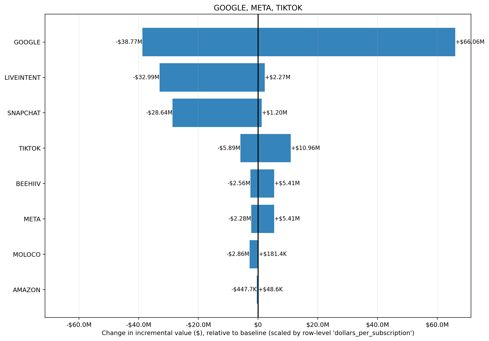

Input CSV: tornado_google_meta_tiktok.csv
Channels altered: GOOGLE, META, TIKTOK
Value Scaling: scaled by row-level 'dollars_per_subscription'
Selection objective: total_new_value
Best prior setup: ROI_PRIOR_OVERRIDES: NA(mu=NA, sigma=NA) | STRUCTURAL_OVERRIDES: NA(mu=NA, sigma=NA)
| prior_setup | total_new_value | delta_value_vs_baseline | delta_roi |
|---|---|---|---|
| ROI_PRIOR_OVERRIDES: NA(mu=NA, sigma=NA) | STRUCTURAL_OVERRIDES: NA(mu=NA, sigma=NA) | $141.51M | +$74.16M | 385.90% |
| ROI_PRIOR_OVERRIDES: NA(mu=NA, sigma=NA) | STRUCTURAL_OVERRIDES: NA(mu=NA, sigma=NA) | $109.61M | +$42.26M | 219.91% |
| ROI_PRIOR_OVERRIDES: NA(mu=NA, sigma=NA) | STRUCTURAL_OVERRIDES: NA(mu=NA, sigma=NA) | $85.04M | +$17.69M | 92.06% |
| ROI_PRIOR_OVERRIDES: NA(mu=NA, sigma=NA) | STRUCTURAL_OVERRIDES: NA(mu=NA, sigma=NA) | $81.28M | +$13.93M | 72.49% |
| ROI_PRIOR_OVERRIDES: NA(mu=NA, sigma=NA) | STRUCTURAL_OVERRIDES: NA(mu=NA, sigma=NA) | $56.79M | -$10.56M | -54.93% |
| channel | delta_value | delta_roi |
|---|---|---|
| +$65.14M | 6.33% | |
| TIKTOK | +$10.91M | 6.22% |
| META | +$5.39M | 6.41% |
| AMAZON | -$124 | -0.01% |
| MOLOCO | -$535.5K | -0.64% |
| BEEHIIV | -$2.02M | -6.16% |
| LIVEINTENT | -$2.06M | -2.58% |
| SNAPCHAT | -$2.66M | -0.61% |
Largest sensitivity ranges are in GOOGLE (-$38.77M to $66.06M); LIVEINTENT (-$32.99M to $2.27M); SNAPCHAT (-$28.64M to $1.20M). Biggest upside scenario is GOOGLE at $66.06M, while the largest downside scenario is GOOGLE at -$38.77M. Bars crossing zero indicate the channel can either help or hurt depending on prior assumptions; wider bars indicate greater uncertainty and model sensitivity.
